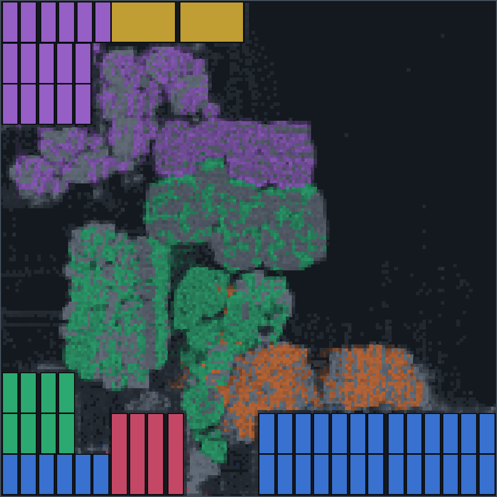

NPU IP · designed by Atelier
A digital in-memory-compute neural processing unit with a RISC-V control core. The weights stay where the math happens, engines scale from one to eight, and every configuration is generated and verified for your workload by Atelier.
Evaluation preview · verified on a full YOLOv8n frame · floorplanned on ASAP7 7 nm
What it is
In most accelerators, moving weights from memory costs more energy than the arithmetic. Sutra keeps each layer's weights in compute memory next to adder trees, so a whole weight tile meets an input vector in one access.
It is fully digital: results are deterministic and bit-exact with the integer model, with no analog noise or calibration.
Built for vision networks
Convolutions, residual adds, pooling and upsampling run on Sutra; the RISC-V core sequences them. When the network fits on chip, as YOLOv8n does, feature maps stay in activation memory between layers and a frame needs no off-chip round trips once the weights are loaded.
All of a network's weights live in compute memory across frames. Each frame moves only the image in and the detections out.
Engines run one frame each in lockstep from a single command stream, so throughput scales with engines and the control program stays the same.
Per-channel fixed-point requantization, zero points, saturation and an activation table (SiLU for YOLO) in hardware: outputs match the integer reference bit for bit.
Residual adds with rescaling, k×k and separable max-pool, nearest upsampling and activations, computed next to the activation memory.
An open CV32E40P (RV32IMC) core runs the network program from its own memory, with C firmware. No proprietary sequencer to learn.
Inputs stream 1, 2, 4 or 8 bits per cycle: fewer bits per cycle for a smaller array, more for a faster one, chosen per design.
Specifications
Every value below is a generator range: Atelier picks the point in it that meets your requirements.
| Item | Sutra NPU |
|---|---|
| Compute per engine | Digital in-memory-compute array, 16–128 rows × 8–64 columns: 128 to 8,192 INT8 multiply-accumulates per cycle |
| Peak performance | 29 GOPS to 14.7 TOPS per engine; up to 118 TOPS with eight engines (INT8, 900 MHz) |
| Engines | 1, 2, 4 or 8 in lockstep, one frame each (RTL verified with 2 and 4) |
| Data types | INT8 weights and activations, 32-bit accumulation, per-channel fixed-point requantization |
| Input precision per cycle | 1, 2, 4 or 8 bits (bit-serial): array area against cycles |
| On-chip memory | Compute memory up to 4 MB per engine (weights resident); activation memory up to 24 MB, 1–16 banks |
| Operations on chip | Convolution (any kernel, stride, padding), matrix multiply, residual add, max-pool, upsample, activation tables (SiLU and others); concat and split by layout |
| Not yet on chip | Softmax and normalization layers (run on the host); floating point |
| Control | RISC-V CV32E40P (RV32IMC) with 256 KB RAM and a C runtime |
| Host interface | Valid/ready ports for commands, configuration, image in and results out; a standard bus wrapper is planned |
| Clock and process | 900 MHz design clock from pre-route timing on the ASAP7 7 nm predictive kit; ports to your foundry's kit and memory compilers |
| Delivered as | SystemVerilog RTL, compiler and runtime, testbenches, physical-design kit, memory list |
Software
One tool takes a trained network to a sized Sutra and the program it runs, and checks the result before you see it. Models from PyTorch or TensorFlow come in through ONNX.
INT8 models in ONNX QDQ form, as ONNX Runtime and common export tools write them. Each layer becomes integer operations with its scales and zero points.
Set frame rate, area, power and latency. Atelier searches array, memories and engines together with the compiler mapping and picks the configuration that meets them.
Every layer becomes Sutra commands: tiles and loop order chosen per layer, activations fused into the post-ops, buffers placed in on-chip memory.
The compiled network runs on the instruction-set model and must equal the integer reference on every output before anything is exported.
A program image for the control core's C runtime, which streams the commands to every engine.
OpenROAD-flow-scripts configuration, constraints and memory list for each design, to synthesize, floorplan and time it yourself.
Applications
Where the network must run on the device, within a power and area budget.
Object detection on every frame, one stream per engine, from always-on to multi-stream.
Defect detection and robot vision on the line, with deterministic, bit-exact results.
Detection and tracking where every watt and every gram counts.
Small single-engine configurations for always-on sensing, sized to the frame rate the sensor needs.
People counting and zone monitoring without sending video off the device.
Bring your own model and targets; Atelier sizes Sutra for it.
Evidence
Checked on real images, then a whole 640×640 frame run on the generated RTL.
Model: Ultralytics YOLOv8n, INT8. Hardware: one 64×64 engine with the RISC-V control core, simulated in Verilator. Implementation: synthesis and floorplan with OpenROAD-flow-scripts on the ASAP7 predictive 7 nm kit. Next: your foundry. The RTL, constraints, memory list and physical-design kit carry over to your process design kit and memory compilers.

One 16×8 Sutra engine with its activation unit and post-op unit, implemented with OpenROAD-flow-scripts on the ASAP7 7 nm predictive kit, after global routing. Boxes are SRAM macros; the shaded areas are standard cells, coloured by block, darker where denser.
The smallest Sutra configuration for each frame-rate target, and the fastest. Atelier estimates for 640×640 INT8 at the 900 MHz design clock: frame rate from the cycle model (within 0.05% of RTL simulation over a full frame), area from ASAP7 synthesis and memory-macro models, power from the energy model. Memory: compute memory per engine + activation memory; b/cycle: input bits per cycle. Try your own targets in the live demo.
| Sutra configuration | FPS | ms / frame | mm² | W | FPS / W |
|---|---|---|---|---|---|
| 1 × 32×32, 8 b/cycle, 1 + 3 MB | 58 | 17.23 | 1.9 | 0.39 | 150 |
| 1 × 64×64, 4 b/cycle, 4 + 3 MB | 129 | 7.76 | 3.5 | 1.04 | 124 |
| 1 × 128×64, 8 b/cycle, 4 + 3 MB | 362 | 2.76 | 4.0 | 2.60 | 139 |
| 4 × 32×64, 8 b/cycle, 4 + 12 MB | 634 | 6.31 | 14.1 | 3.92 | 162 |
| 4 × 64×64, 8 b/cycle, 4 + 12 MB | 1,045 | 3.83 | 14.6 | 6.52 | 160 |
highlighted highest frame rate, smallest area, lowest power
Language models
Every matrix multiply of a generated token on the generated RTL, with Qwen3-0.6B's real shapes; the norms, softmax and RoPE in our integer spec beside it. Those non-matrix layers are not on chip yet.
Model: Qwen3-0.6B (28 layers, grouped-query attention), INT8 weights and activations; wider layers split into 1,024-channel parts; attention run as matrix multiplies with K and V loaded at run time. Hardware: one 64×64 engine, simulated in Verilator, its weights and commands fed one per cycle by the test bench: the job of a planned weight DMA and command queue (the RISC-V control core alone takes about ten cycles per command). Not yet on chip: RMSNorm, softmax, RoPE and the SwiGLU multiply, which the estimates below cost on proposed units.
One 64×64 engine (3.9 mm²) at 900 MHz with the planned weight DMA and command queue; a 512-token prompt, then tokens generated with 1,024 in context. Engine cycles from the cycle model checked above; DRAM time from bytes moved over the bandwidth; energy from the calibrated energy model, standard-cell compute memory. Estimates, not measurements.
| Memory | Weights | ms to first token | tokens / s | mJ / token | W |
|---|---|---|---|---|---|
| LPDDR4X, 17 GB/s | INT8 | 145 | 24 | 66 | 1.6 |
| LPDDR4X, 17 GB/s | INT4 (planned) | 138 | 41 | 43 | 1.8 |
| LPDDR5X, 68 GB/s | INT8 | 100 | 49 | 51 | 2.5 |
| LPDDR5X, 68 GB/s | INT4 (planned) | 100 | 49 | 42 | 2.0 |
What you get
Each Sutra configuration is delivered as a package your RTL, software and physical-design teams can each pick up.
The engines, memories, element-wise unit and top with your configuration's parameters, plus a memory list for your foundry's memory compiler.
From a quantized ONNX model to the command program, and the RISC-V runtime that runs it.
cocotb testbenches, the integer reference model and whole-frame checks that compare the RTL bit for bit.
OpenROAD-flow-scripts configuration, constraints and memory macros: synthesize, floorplan and time each block yourself.
Every figure says how it was obtained: estimated, simulated, synthesized or routed.
Bring your workload and requirements; Atelier re-sizes Sutra for it and the same checks run again.
Status
Verified in simulation, implemented on ASAP7, ready to take to your process.
Full YOLOv8n frame bit-exact on the RTL; COCO accuracy measured; RISC-V control verified in simulation.
Every block synthesized and floorplanned on ASAP7 7 nm with its memory macros, with timing reports and a reproducible flow kit.
Port to your process design kit and memory compilers, then place-and-route and signoff in your flow.
Frame rate, power and area for your configuration on your process, measured, not modelled.
Resources
Try the design search, read how it works, or install the toolkit.
Pick frame rate, area and power and see which Sutra Atelier chooses for YOLOv8n.
TECHNOLOGYArchitecture and compiler searched together, and the checks behind every number.
DOWNLOADInstall with pip, design for YOLOv8n, export a package with its flow kit.
Evaluate Sutra
Tell us your workload and your frame-rate, area and power targets. We size Sutra for it and share the package and the evidence for that configuration.
hello@zenedgex.in